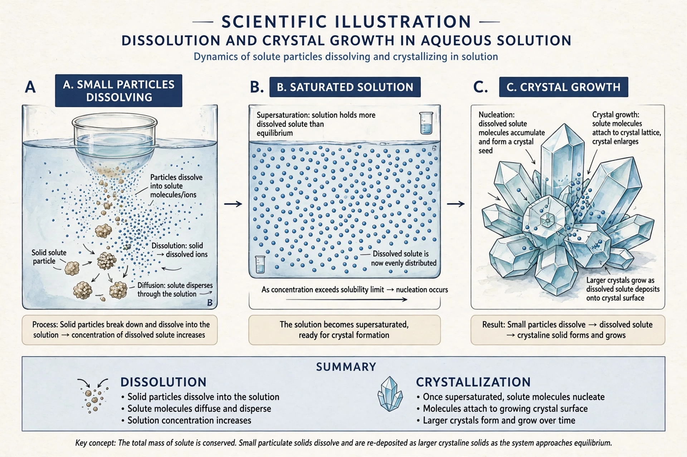

| Ostwald ripening | |
|---|---|
 Small particles dissolve and redeposit onto larger ones | |
| Named after | Wilhelm Ostwald |
| Described | 1901 |
| Field | Physical chemistry, materials science |
| Governing theory | LSW theory (Lifshitz–Slyozov–Wagner) |
Ostwald ripening is a phenomenon observed in solid solutions and liquid sols that involves the change of an inhomogeneous structure over time, in particular the dissolution of small crystals or particles and the redeposition of the dissolved species on the surfaces of larger crystals or particles. It is driven by the reduction of total interfacial energy: because smaller particles have a higher surface-area-to-volume ratio, they are thermodynamically less stable and more soluble than larger ones, a consequence of the Gibbs–Thomson (Kelvin) effect.
In a saturated solution, the equilibrium solubility around a small particle is higher than around a large one. Material therefore diffuses from the neighbourhood of small particles—where the local concentration exceeds the far-field value—to large particles, whose surfaces act as sinks. The small particles shrink and eventually vanish, while the mean particle size of the population grows. The process continues until a single large crystal remains, given enough time.
The quantitative description developed independently by Lifshitz and Slyozov (1961) and Wagner (1961)—LSW theory—predicts that in the diffusion-limited regime the cube of the mean particle radius grows linearly with time, and that the particle-size distribution approaches a self-similar form. When interfacial attachment kinetics rather than diffusion is rate-limiting, the mean radius squared grows linearly with time instead.
Ostwald ripening explains the grainy texture that develops in ice cream on storage, as small ice crystals merge into larger ones during temperature fluctuations; the coarsening of precipitates that harden alloys; the ageing of nanoparticle catalysts, whose activity falls as particles grow; and geological processes such as the growth of large crystals in magma chambers. Wilhelm Ostwald first described the phenomenon in 1901, building on the thermodynamic treatment of curved interfaces by Gibbs and Thomson.